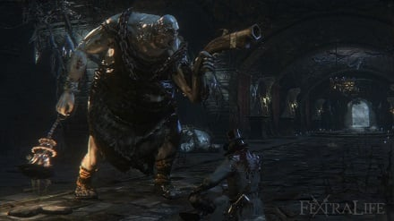
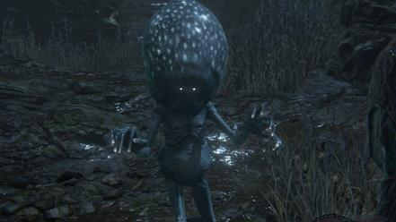
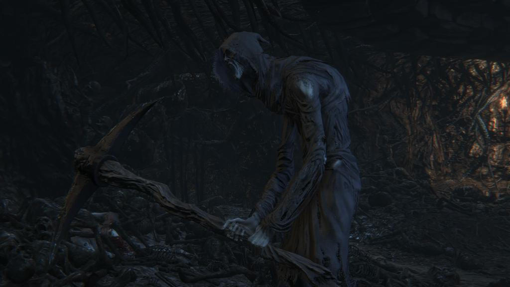

Enemies
Beast Patient |
|
| "The *****ed remnants of a Hunt from long ago. The burns and scars from the Healing Church's purge are still fresh in the mangled minds of these beasts." | |
| Location | Old Yharnam, Loran Chalices & Hunter's Nightmare |
| Drops | Blood Vials, may drop Pulsing or Tempering Blood gems in Chalice dungeons |
| Weaknesses | Fire |
| Beast/Kin | Beast |

Beast Claw Hunter |
|
| "Description" | |
| Location | Loran Chalices |
| Drops | waning Blood Gems |
| Weaknesses | Thrust, Arcane, Bolt |
| Beast/Kin | neutral? |
Beast-possessed Soul |
|
| "Dimly lit by pale moonlight, unscorned by human pity, lie things unseen by curious eyes, blood-thirsty and lithy. Hunter! Fear the possessed beast, fangs sharp as Ludwig's nerve, for it will feast upon your limbs, no mercy nor reserve." - Old Yharnam Limerick. | |
| Location | Healing Church Workshop & Chalice Dungeons |
| Drops | Blood Gems, Blood Vials & Beast Blood Pellets |
| Weaknesses | Fire, Serration (Boss is NOT weak to Fire) |
| Beast/Kin | Beast |
Bloodlicker |
|
| "This grotesquely misshapen creation crawls along the icy Cainhurst courtyard, erratic and almost comical in some morbidly twisted way." | |
| Location | Forsaken Castle Cainhurst & Chalice Dungeons |
| Drops | Blood Gems (typically Warm) |
| Weaknesses | Righteous |
| Beast/Kin | Neutral |
Bone Ash Hunter |
|
| "Lithe, graceful and ruthlessly efficient when dealing with foes, these agile hunters wield the scorching power of fire to effectively eliminate their targets." | |
| Location | Chalice Dungeons |
| Drops | radial Blood Gems |
| Weaknesses | Blunt, Blood, Arcane |
| Beast/Kin | neutral? |
Brain of Mensis |
|
| "The immense brain that Mensis retrieved from the nightmare was indeed lined with eyes on the inside, but they were of an evil sort, and the brain itself was terrible rotten. But even still, it was a legitimate Great One, and left a relic. A living relic, at that, which is a precious thing indeed. " | |
| Location | Mergo's Loft Middle |
| Drops | Living String |
| Weaknesses | None |
| Beast/Kin | Neutral |
Brainsucker |
|
| "Driven mad by wisdom not of this world, these fiends will seek to bound you in place and steal what is in your very head. But who is to say this is not a good thing?" | |
| Location | Upper Chapel Ward, Orphanage & Chalice Dungeons |
| Drops | Quicksilver Bullets, Shaman Bone Blade & Blood Gems (frequently drops arcane-fortifying gems) |
| Weaknesses | Bolt & Fire, Thrust & Blood |
| Beast/Kin | Kin |
Cainhurst Hunter |
|
| "Description" | |
| Location | Chalice Dungeons |
| Drops | triangular Blood Gems, Quicksilver Bullets |
| Weaknesses | Blunt, Arcane, Bolt |
| Beast/Kin | neutral? |
Cainhurst Servant |
|
| "What keeps them here? Loyalty? Fear? Denial? None could answer, save the servant's themselves if only they spoke." | |
| Location | Cainhurst Castle |
| Drops | Blood Vials, Quicksilver Bullets & Numbing Mist |
| Weaknesses | Minor weakness to Bolt Nothing else is remarkable. |
| Beast/Kin | Neutral |
Carrion Crow |
|
| "Among the crows that eat rotting carrion, there are those that favor human meat. Those bloated, ugly monsters drag themselves between the corpses feasting on the once rich citizens of Yharnam." | |
| Location | Central Yharnam, Old Yharnam, Hemwick Charnel Lane, Cathedral Ward, Forbidden Woods, Iosefka's Clinic, Nightmare of Mensis, The Hunter's Nightmare |
| Drops | Pebbles, Antidotes |
| Weaknesses | Fire |
| Beast/Kin | Beast |
Celestial Larvae |
|
| "In any form, new life demands a caretaker. Be wary you are not selected for this role, as it may yet drive you mad." | |
| Location | Upper Cathedral Ward, Tomb of Oedon, Chalice Dungeons |
| Drops | Madman's Knowledge |
| Weaknesses | Fire, Bolt, Thrust & Blood |
| Beast/Kin | Kin |

Chime Maiden |
|
| "One of Yharnam's sinister urban legends, this crazed woman dressed in black carries with her a special bell. It is said that the sound of her bell brings out all sorts of unsavory creatures." | |
| Location | Chalice Dungeon, Yahar'gul, Nightmare Frontier, Nightmare of Mensis, when ever another player is summoned via using the Beckoning Bell, a chime maiden will appear somewhere in the area. |
| Drops | Quicksilver Bullets |
| Weaknesses | weak defenses overall |
| Beast/Kin | Neutral |

Chapel Giant |
|
| "The church controls treatment of the disease, but it hunts with this large servant. Half terrifying legend, its expression is vacant, its skin pallid, its huge form oddly thin. It screams as it swings its silver weapon. A bell hangs from its neck, and when the citizens of Yharnam hear its ring they close their doors and stay within." | |
| Location | Cathedral Ward, Lecture Building, Forbidden Woods |
| Drops | Blood Stone Shards, Blood Vials, Blue Elixir |
| Weaknesses | None Strong to Bolt, Arcane & Fire |
| Beast/Kin | Neutral |
Church Servant |
|
| "Their ghostly pale visage and sluggish movements can terrorize the bravest hunter, while they stomp their cane threateningly, their face a yawning horror." | |
| Location | Cathedral Ward, Upper Cathedral Ward |
| Drops | Quicksilver Bullets, Blood Vials, Blue Elixir |
| Weaknesses | None Strong to Arcane |
| Beast/Kin | Neutral |
Cramped Casket |
|
| "This hideous aberration can be found writhing among the oblique corners of Yahar'gul, twisting and contorting as if to escape its own tortured existence." | |
| Locations | Yahar'gul (Bloodmoon) |
| Drops | Blood Vial |
| Weaknesses | Thrust |
| Beast/Kin | Neutral |
Crawler |
|
| "This cephalopod-like creature dwells in the poisonous bogs of the Nightmare, bathing in noxious fumes as if they were a fresh water stream." | |
| Locations | Nightmare Frontier |
| Drops | Thick Coldblood (4-6) |
| Weaknesses | Bolt, Thrust, Blood |
| Beast/Kin | Neutral |
Executioner |
|
| "There aren't many beings as imposing as the Executioner, patrolling Yarnham in search of new trophies." | |
| Location | Central Yarnham, Forbidden Woods, Hemwick Charnel Lane, ?? |
| Drops | Blood Vials, Blood Gems (typically Tempering), Pungent Blood Cocktails |
| Weaknesses | Bolt, Arcane & Parrying Vulnerable to Blunt |
| Beast/Kin | Neutral |
Evil Labyrinth Spirit |
|
| "A spectral minion of sorts, tormented by bitter regret in a previous life and, as such, unable to find peace." | |
| Locations | Chalice Dungeons |
| Drops | Blood Gems |
| Weaknesses | Arcane, Fire, Bolt & Righteous |
| Beast/Kin | Neutral |
Witch of Hemwick (Mob) and Eye Collector |
|
| "Something lurks in the shadows of the Unseen Village: a misshapen creature that might once have been a woman, but who now lies in wait to prey on the unsuspecting, and bathe in their blood." | |
| Location | Hypogean Gaol & Chalice Dungeons |
| Drops | Pebbles, Bloodshot Eyeballs & Blood Gems |
| Weaknesses | None Strong to Poison |
| Beast/Kin | Neutral |
Cloaked Beast Patient |
|
| "A slow death awaits those caught by the beast who hides its face. For who knows what awful mixture of human and animal sulks beneath that veil?" | |
| Location | Old Yharnam & Chalice Dungeons |
| Drops | Blood Vials, Antidotes & Blood Gems |
| Weaknesses | Fire |
| Beast/Kin | Beast |
Fluorescent Flower |
|
| "Brilliant yet fatal, these overgrown arthropods boast high defense and powerful magic. Hunters must be both light-footed if they are to dodge their deadly spells." | |
| Location | Byrgenwerth & Chalice Dungeons |
| Drops | Arcane Haze |
| Weaknesses | Blood, Flower |
| Beast/Kin | Kin |
Silver Lady |
|
| "All the nobles of Cainhurst Castle are long since dead, except... One feels that a presence remains, a subtle, terrible pain etched into the very walls." | |
| Location | Cainhurst Castle |
| Drops | None |
| Weaknesses | Bolt & Righteous |
| Beast/Kin | Neutral |
Garden of Eyes |
|
| "Among the moonlit terraces and exotic Byrgenwerth gardens lie treacherous and vile creatures, spying on unsuspecting hunters with their malice-filled, jaundiced eyes. | |
| Locations | Byrgenwerth & Chalice Dungeons |
| Drops | Quicksilver Bullets, Sedatives, Blood Gems & Pearl Slug |
| Weaknesses | ?? |
| Beast/Kin | Kin |
Blood Gel |
|
| "Located on the tops of the underground labyrinth caves, it waits for its next unsuspecting Hunter to consume whole." | |
| Locations | Chalice Dungeons |
| Drops | Oil Urn, Shining Coins & Pebbles |
| Weaknesses | Arcane, Fire & Bolt |
| Beast/Kin | Neutral |
Giant Lost Child |
|
| "Of gentle giants in these lands none dwell. Yet, an oaf remains such, and one can't but feel pity in the face of childish innocence." | |
| Locations | Nightmare Frontier & Nightmare of Mensis |
| Drops | Bloodstone Shard, Lead Elixir & Twin Bloodstone Shards |
| Weaknesses | Fire, Arcane & Bolt |
| Beast/Kin | Neutral |
Gravekeeper Scorpion |
|
| "Whether as fast as a shadow's chikage, or as stealthy as stalkers, scorpions pose threats to all manners of hunters so come prepared with antidotes." | |
| Locations | Chalice Dungeons |
| Drops | Blood Gems (typically Murky) |
| Weaknesses | Arcane, Fire, Bolt |
| Beast/Kin | Beast |

Hemwick Grave Woman |
|
| "Their mumblings give away their presence from a distance, but their screams can be deafening. They wield a variety of weapons, but what they lack in dexterity they more than make up for with intensity and tenacity." | |
| Location | Hemwick Charnel Lane & Yahar'gul |
| Drops | Blood Vials, Quicksilver Bullets, Blood Gems, Molotov Cocktail |
| Weaknesses | None |
| Beast/Kin | Neutral |

Hunting Dog |
|
| "A gruesome twist on your average hunting dog. It sports dozens of spiky protrustions from its back and is more aggresive than ever, tearing overly confident hunters to bits in mere seconds." | |
| Location | Hemwick Charnel Lane & Chalice Dungeons |
| Drops | Bloodstone Shards & Twin Bloodstone Shards, |
| Weaknesses | Thrust (NOT Fire) & Serrated |
| Beast/Kin | Beast |
Huntsman |
|
| "Due to the infestation of the scourge, this is what the mob that has risen for the beast hunt have become. The fever-like urge to hunt remains, but they themselves have already been infested with the scourge of the beast." | |
| Location | Central Yharnam, Cathedral Ward, Healing Church Workshop, Forbidden Woods, Yahar'gul (Bloodmoon) |
| Drops | Quicksilver Bullets, Blood Vials, Blood Stone Shards, Molotov Cocktails & Pungent Blood Cocktail |
| Weaknesses | None |
| Beast/Kin | Neutral |
Brick Troll |
|
| "Don't let their slow and lumbering walk fool you. Despite their low mental capacity, when agitated they can deal devastating blows." | |
| Location | Central Yarnham, Hemwick Charnel Lane, Yahar'gul Unseen Village (After defeating Rom, the Vacuous Spider), ?? |
| Drops | Blood Vials & Shining Coins |
| Weaknesses | Parrying, Blunt |
| Beast/Kin | Neutral |
Keeper of the Old Lords |
|
| Location | Chalice Dungeons |
| Drops | Blood Gems (typically sharp) & Blood Vials |
| Weaknesses | Vulnerable to Arcane Strong to Fire |
| Beast/Kin | Neutral |
Keeper's Hunting Dog |
|
| "Ever-faithful, even when grotesquely transformed and succumbed to the Scourge. These dogs continue to hunt their masters' prey, fueled by a voracious thirst for blood." | |
| Location | Chalice Dungeons |
| Drops | Bloodstone Shard, Twin Bloodstone Shards & Bloodstone Chunk |
| Weaknesses | Serrated, knocked down by Blood |
| Beast/Kin | Beast |
Snatcher |
|
| "Of all the beasts you may encounter on the night of the Hunt, beware the Snatchers. For to them, it is not enough to take your life, they wish to drag you into their vile kingdom and subject you to their abhorrent rituals." | |
| Location | Cathedral Ward after killing the Blood Starved Beast, Healing Church Workshop, Yahar'gul (Evening), Forbidden Woods & Chalice Dungeons |
| Drops | Blood Stone Shards, Twin Blood Stone Shards, Bolt Paper & Ritual Blood (1-5) |
| Weaknesses | Poison |
| Beast/Kin | Neutral |
Labyrinth Sage |
|
| "The Healing Church holds no regards for pious men nor saints; in their avid lust for knowledge they turned the once holy into the utterly abominable." | |
| Locations | Chalice Dungeons |
| Drops | Blood Gems, Quicksilver Bullets, Sage's Hair & Sage's Wrist |
| Weaknesses | Fire |
| Beast/Kin | Beast |

Labyrinth Mole |
|
| "..." | |
| Locations | Chalice Dungeons |
| Drops | Blood Vials |
| Weaknesses | Bolt |
| Beast/Kin | Neutral (?) |
Giant Rat |
|
| "Scourge of the world, the pestilence bringer, ever-present yet hardly welcome. Hunters should fear rats, particularly when the unruly mischief is starved and blood thirsty." | |
| Locations | Central Yarnham, Chalice Dungeons |
| Drops | Throwing Knife & Tomb Mold |
| Weaknesses | None |
| Beast/Kin | Beast |
Labyrinth Ritekeeper |
|
| "Whether the ruins are tombs or a mere resting place for something dark and foul, one thing is true: Someone or something lies asleep here. The Protectors also worship what lies beneath, and among the Protectors are a special class of ritual masters that carry out horrific and detestable ritual rites." | |
| Location | Chalice Dungeons |
| Drops | Blood Gems (typically Pulsing for the ones walking around, Warm/Bloodtinge for the squatting ones) & Ritual Blood (1-5) |
| Weaknesses | Most vulnerable to Blood Minor resistance to Arcane |
| Beast/Kin | Neutral |
Tomb Guardian |
|
| "Warriors stand tall in the lower depths of Pthumeria, guarding riches, treasure rooms and central chambers from trespassers and defilers." | |
| Locations | Chalice Dungeons |
| Drops | Blood Vials, Blood Gems, Inflicted Organ |
| Weaknesses | Arcane |
| Beast/Kin | Neutral |
Pthumerian Undead (Group) |
|
| "Roaming the surface of the Pthumerian labyrinths, watchers will do their utmost to protect the central chambers." | |
| Locations | Chalice Dungeons |
| Drops | Blood Vials, Quicksilver Bullets & Blood Gems (fire and tempering) |
| Weaknesses | Arcane |
| Beast/Kin | Neutral |
Large Crawler |
|
| "Like their smaller cousins, these tentacled horrors inhabit the venomous Nightmare swamps; they will however have a much easier time suffocating unaware passers-by." | |
| Locations | Nightmare Frontier |
| Drops | Thick Coldblood (4-6) |
| Weaknesses | Bolt, Blood, Thrust |
| Beast/Kin | Neutral |
Large Huntsman |
|
| "And beasts arose like nightmare fiends, as eager as starved ticks; yet reason, guilt and conscience were dwelling underneath." | |
| Locations | Central Yharnam, Cathedral Ward & Forbidden Woods |
| Drops | Blood Vial, Bloodstone Shard & Oil Urns |
| Weaknesses | Fire |
| Beast/Kin | Beast |
Large Nightmare Apostle |
|
| "A larger variant of the more common apostle spiders, watching over matters with motherly concern." | |
| Locations | Nightmare of Mensis, Chalice Dungeons |
| Drops | Quicksilver Bullets |
| Weaknesses | knocked down by Blood |
| Beast/Kin | Neutral |
Greater Viper Pit |
|
| "Venomous, ravenous, and cold-hearted as the pale moon. Each fang is another reason to stay out of the Forbidden Wood." | |
| Location | Forbidden Woods |
| Drops | Bloodstone Shard, Twin Bloodstone Shards, Blood Gems (typically Murky) |
| Weaknesses | None |
| Beast/Kin | Neutral |
Loran Cleric |
|
| "Description goes here." | |
| Locations | Loran Chalices |
| Drops | Blood Gems & Blooming Coldblood Flower |
| Weaknesses | Fire. Strong to Bolt & Rapid Poison |
| Beast/Kin | Beast |
Loran Silverbeast |
|
| "While at rest these horrors seem innocuous, but as they stand one soon discovers how feral they are and their eagerness to kill." | |
| Locations | Nightmare Frontier, Nightmare of Mensis & Chalice Dungeons |
| Drops | Blood Gems (typically Bolt and Fire, and rarely drops Pulsing), Blood Vial & Bastard of Loran |
| Weaknesses | Fire, Arcane, Blood Strong Physical (all) & Bolt |
| Beast/Kin | Beast |
Cainhurst Gargoyle |
|
| "The castle yields neither to weather nor foe, and these stone guardians act as a symbol of Cainhurst's fortitude." | |
| Location | Cainhurst Castle & Chalice Dungeon |
| Drops | Twin Blood Stone Shards, Bloodstone Chunk & Blood Gems |
| Weaknesses | Bolt & Righteous |
| Beast/Kin | Neutral |
Mad One |
|
| "But what rose out of the ground was never human. Born of the trembling blood with a scream that pierced your very heart, the wraith began its chase." | |
| Location | Hemwick Charnel Lane & Chalice Dungeon |
| Drops | Blood Gems |
| Weaknesses | None |
| Beast/Kin | Neutral |
Maneater Boar |
|
| "A beast of this size will find no trouble trampling an unsuspecting Hunter. If you hear a beastly squeal and it starts to charge, you have but one option: flee." | |
| Location | Central Yharnam, Forbidden Woods, Nightmare of Mensis, Yahar'gul (Evening) & Chalice Dungeon |
| Drops | Blood Vials & Blood Gems (typically Radiant) |
| Weaknesses | Visceral Attacks, Serrated, Blunt |
| Beast/Kin | Beast |

Merciless Watcher |
|
| "Protectors roam the depths, keeping guard over the quiet. Born in the depths and living off of blood and rotting flesh, they are cold and damp, with bluish-white skin that has never been touched by sunlight, and devolved eyes that are pitch black and sunk deep into their sockets." | |
| Location | Chalice Dungeons |
| Drops | Blood Gems (may drop Tempering, Fire, Arcane, Bolt, Adept, Beasthunter, Fool's, Poorman's, Murky, or Heavy), Blood Vial, Quicksilver Bullets & Ritual Blood (1-5) |
| Weaknesses | Arcane (Boss variant is NOT weak to Arcane) Vulnerable to Blunt |
| Beast/Kin | Neutral |
Mergo's Attendant |
|
| "Some say academics from the faculty of the School of Mensis still reside in the Nightmare, dictating dream logic within its warped fabric. Could these masked horrors be the very same?" | |
| Locations | Nightmare of Mensis |
| Drops | Blood Gems |
| Weaknesses | Bolt, Thrust |
| Beast/Kin | Neutral |
Mergo's Chief Attendant |
|
| "In the dusty corners of the Mensis nightmare lurk Mergo's chief attendants, presiding over the nightmare with a caretaker's diligence." | |
| Locations | Nightmare of Mensis |
| Drops | Blood Gems (typically Murky) |
| Weaknesses | Bolt, Blunt, Thrust |
| Beast/Kin | Neutral |
Nightmare Apostles |
|
| "Of nightmarish creatures there are many in Mensis, yet few are as sly and as cunning as spiders, scuttling unperturbed along the loft's rafters." | |
| Locations | Nightmare of Mensis & Chalice Dungeon |
| Drops | Quicksilver Bullets & Sedative |
| Weaknesses | None |
| Beast/Kin | Neutral |
Hateful Maggot |
|
| "Blindly vicious, these creatures will leap from the ground to bury their curved mandibles into flesh." | |
| Location | Castle Cainhurst, Nightmare of Mensis, Forbidden Woods & Chalice Dungeon |
| Drops | Coldblood Dew (1-3) |
| Weaknesses | Physical (all) & Blood Strong to Bolt, Arcane & Fire |
| Beast/Kin | Neutral |

Pilgrim |
|
| "It meanders in the seemingly endless depths of the labyrinth, mourning in front of the remains of graves in the darkness. What binds such pitiful souls to this world?" | |
| Locations | Chalice Dungeons |
| Drops | Blood Vials, Quicksilver Bullets |
| Weaknesses | Aggression |
| Beast/Kin | Neutral |
Rabid Dog |
|
| "On the night of the Hunt, it becomes impossible to distinguish the sounds of the Hunter mob from the snarls and howls of their companion beasts." | |
| Location | Central Yharnam, Cathedral Ward, Healing Church Workshop, Hemwick Charnel Lane, Yahar'gul (Evening & Bloodmoon), Nightmare of Mensis & Chalice Dungeon |
| Drops | None |
| Weaknesses | Fire, low defenses-allround |
| Beast/Kin | Beast |
Rotted Corpse |
|
| "Nestled in the fetid broth of the sewers are rotten corpses, pathetic beings who pitifully grasp at some last semblance of life while slithering along in the malodorous slime." | |
| Locations | Central Yharnam, Forbidden Woods, Chalice Dungeon |
| Drops | Blood Vial, Bold Hunter's Mark & Sedative |
| Weaknesses | Fire & Bolt |
| Beast/Kin | Neutral |

Slime Scholars |
|
| "Historians firmly believe that pious scholars of Mensis stood tall among erudite men, yet these deplorable beings are all that remains." | |
| Locations | Lecture Building, Lecture Building 2nd Floor |
| Drops | Quicksilver Bullets & Sedative |
| Weaknesses | Fire & Bolt |
| Beast/Kin | Neutral |
Scourge Beast |
|
| "Taken and transformed by the plague at a very early stage, these beasts are extremely fast and powerful, capable of closing in on Hunters in the blink of an eye. They can easily take Hunters by surprise with their erratic and unpredictable movements. Extreme care is required when dealing with them, especially when encountered in pairs." | |
| Location | Central Yarnham, Old Yharnam, Yahar'gul (Blood Moon), Upper Cathedral Ward & Chalice Dungeon |
| Drops | Blood Stone Shards, Blood Vials, Beast Blood Pellets, Bloodstone Chunk & Blood Gems |
| Weaknesses | Fire & Serrated |
| Beast/Kin | Beast |

Shadow of Yharnam |
|
| "The unmistakable robed figure of a Shadow instils fear into the once fearless. Nimble and expertly trained, they often strike unseen and as lethally as discipline calls." | |
| Locations | Mergo's Loft: Middle (Nightmare of Mensis) & Chalice Dungeon |
| Drops | Blood Vials, Quicksilver Bullets & Ritual Blood (1-5) |
| Weaknesses | Weakest to Physical, Thrust, Blunt & Blood |
| Beast/Kin | Neutral |
Skeletal Puppet |
|
| "Keeper, keeper is that you? Whose whispers fill the forlorn loft? Where acrid mists drive hunters aft, alas, turning grown men soft?" | |
| Locations | Mergo's Loft: Middle (Nightmare of Mensis) |
| Drops | None |
| Weaknesses | None |
| Beast/Kin | Neutral |

Small Celestial Emissary |
|
| "Who could look up and not be overcome by wonder, fascination, and curiosity? But the pursuit of knowledge is a dangerous thing, and the man who returns may not be the man who left." | |
| Location | Iosefka's Clinic, Orphanage (Upper Cathedral Ward), Forbidden Woods & Chalice Dungeon |
| Drops | Blood Gems (typically Arcane, but may drop tempering, bolt, or fire), Blue Elixir, Iosefka's Blood Vial, Quicksilver Bullets |
| Weaknesses | Bolt, Fire, Thrust & Blood |
| Beast/Kin | Kin |
Snake Ball |
|
| "Though certainly not as threatening as their mature counterparts, these snakes are no less deadly. For these silent predators make up in stealth what they lack in size." | |
| Location | Forbidden Woods & Chalice Dungeon |
| Drops | Bloodstone Shards, Blood Gems (typically Murky) |
| Weaknesses | Fire & Arcane |
| Beast/Kin | Neutral |
Vermin Host |
|
| "At first glance, they are no different from your average huntsmen, arisen to join in on the hunt. Alas, when approached, they undergo a drastic, horrifying transformation." | |
| Location | Forbidden Woods |
| Drops | Blood Vials, Blood Gems |
| Weaknesses | Minor weakness to Bolt Minor resistance to Arcane |
| Beast/Kin | Neutral |
Undead Giant |
|
| "Description goes here." | |
| Locations | Chalice Dungeons |
| Drops | None |
| Weaknesses | None |
| Beast/Kin | Neutral |

Watcher's Gravedigger |
|
| "Entities lifelessly working in the deepest, dankest layers of Pthumerian Labyrinths. They remain docile unless approached, mindlessly swinging at rock. How long have they been down there?" | |
| Location | Chalice Dungeons |
| Drops | Blood Vial, Ritual Materials |
| Weaknesses | Arcane |
| Beast/Kin | Neutral |

Wheel Hunter |
|
| "A most unusual and ridiculous foe, however they are not to be underestimated. Even though the near complete lack of clothing, strangely-shaped helmet and the wheel they wield being bigger than they are leads you to believe otherwise, you just might find yourself taking a cannonball to the midsection." | |
| Location | Chalice Dungeons |
| Drops | shape? Blood Gems |
| Weaknesses | Low defenses all-round |
| Beast/Kin | neutral? |
Wheelchair Huntsman |
|
| "Among the mob hunting the beasts, old men on wheelchairs can be found. Rich elderly men in wheelchairs are a common sight in Yharnam, and are often armed with firearms from the old wars." | |
| Location | Central Yharnam, Healing Church Workshop |
| Drops | Quicksilver Bullets |
| Weaknesses | Bolt & Fire |
| Beast/Kin | Neutral |

Winter Lantern |
|
| "There it stood, uttering a warbled cry, a litany so dissonant it pierced a warrior's eardrums, driving him to an otherworldly insanity." | |
| Location | Nightmare Frontier, Nightmare of Mensis |
| Drops | Blood Gems (typically Droplet Cursed Tempering Blood Gems), Quicksilver Bullets & Pebble |
| Weaknesses | None Strong to magic |
| Beast/Kin | Neutral |
 Anonymous
AnonymousWhat the hell are these infuriating creatures? Any tips on how to deal with them?

Load more
bop
0
+10
-1